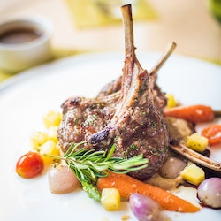

Lamb Steak!

Description
This recipe features seasoned and seared lamb chops that are roasted in the oven until fully cooked. The colorful vegetables, including red onion, red bell pepper, zucchini, and cherry tomatoes, are sautéed in the same skillet as the lamb chops for added flavor. This easy-to-prepare meal is both delicious and healthy, making it perfect for any occasion.
Ingredients:
- 4 lamb chops
- 1 tablespoon olive oil
- 1 tablespoon dried rosemary
- Salt and pepper to taste
- 2 garlic cloves, minced
- 1 red onion, chopped
- 1 red bell pepper, chopped
- 1 zucchini, chopped
- 1 cup cherry tomatoes, halved
- 1/4 cup chopped fresh parsley
Steps:
- Preheat oven to 400°F (200°C).
- Season the lamb chops with salt, pepper, and dried rosemary.
- Heat olive oil in a large skillet over medium-high heat. Add the lamb chops and sear for 2-3 minutes on each side until browned.
- Transfer the lamb chops to a baking dish and roast in the oven for 10-12 minutes, or until the internal temperature reaches 145°F (63°C).
- In the same skillet used for the lamb, sauté the garlic, onion, and bell pepper for 3-4 minutes until slightly softened.
- Add the zucchini and cherry tomatoes to the skillet and cook for an additional 3-4 minutes.
- Season the vegetables with salt and pepper to taste and sprinkle with fresh parsley.
- Serve the roasted lamb chops with the sautéed vegetables on the side.
Enjoy it!